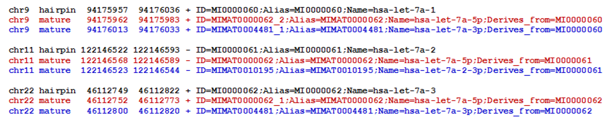
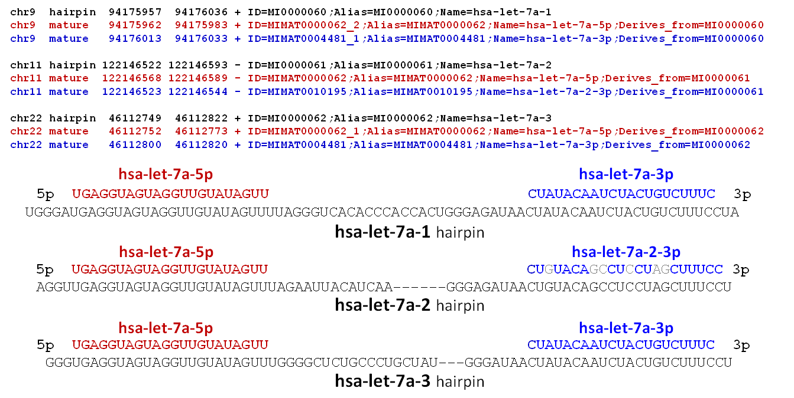
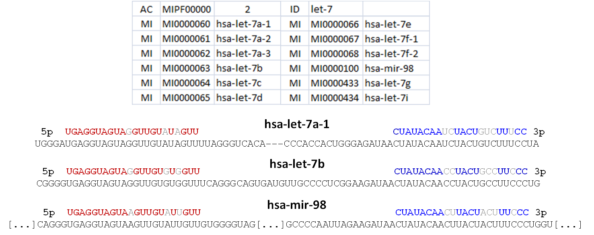
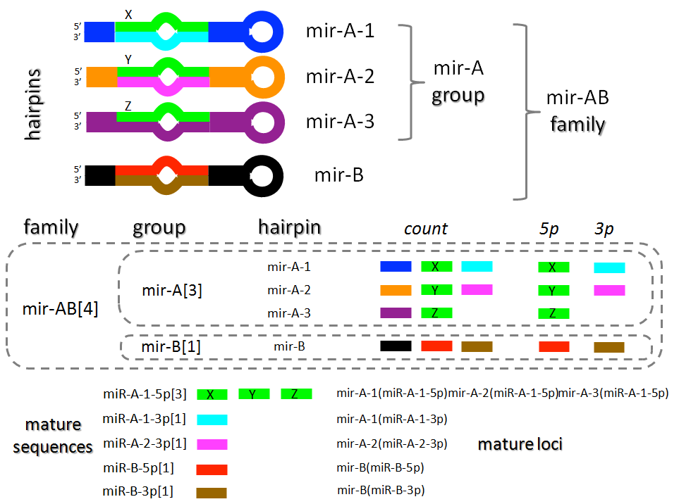
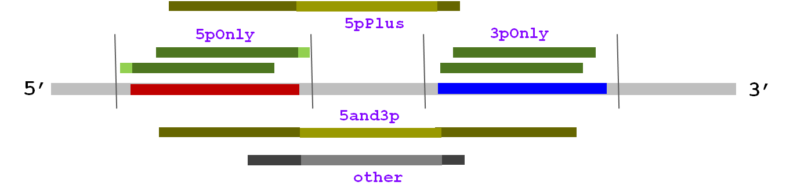

mirUtils and miRBase taxonomy
mirUtils uses miRBase miRNA annotations as the basis of the different levels at which alignment statistics are reported. These categories are either directly defined by miRBase annotations (such as miRNA precursor hairpins or hairpin families) or are assigned by mirUtils based on interpreting those annotations (such as groups of related precursor miRNA hairpins or mature sequences). While miRBase names and other annotations should never be considered as definitive, they provide a useful taxonomy for initial quantitative analyses.
This section describes how annotations obtained from miRBase artifacts are used to construct the different taxonomy levels at which mirUtils reports. See also mirUtils metadata for specific details on mirUtils miRNA hairpin precursor and mature miRNA level definitions, and mirUtils statistics files for specifics of the count fields in mirUtils reports.
miRNA loci versus miRNA sequences
One important distinction to keep in mind is that between genomic miRNA loci and miRNA sequences. For example, a gene duplication event might create two miRNA precursor hairpin loci in the genome which share the same hairpin sequence. Similarly, two different miRNA hairpin loci with different mature miRNA loci annotations, might give rise to identical or highly similar processed mature miRNA sequences.
Many miRNA quantitation tools -- and the analyses based on them -- fail to take these sorts of issues into consideration. As a result, real sequence-similar mature miRNA expression patterns may be missed. This is one of the analytical deficiencies mirUtils was designed to address.
miRBase miRNA locus annotations
Each set of miRBase mirbase version artifacts includes organism-specific miRNA genomic loci files for many commonly studied organisms (more than 90 at last count). These <organism>.gff3 files provide genomic coordinates and identifiers for both miRNA precursor hairpins and the processed mature miRNA species derived from them.
Figure 1 shows some simplified example entries from the hsa.gff3 file for miRBase version v21. Three miRNA precursor hairpin loci are shown (black text) along with the mature miRNA species derived from their 5' (red text) and 3' (blue text) arms. These three miRNA genes are located on three different chromosomes and in two different strand orientations.
|  |
| Figure 1. Simplified example entries from the hsa.gff3 file for miRBase version v21. Along with the removal of non-essential GFF fields, the GFF type miRNA_primary_transcript has been replaced by the term hairpin and the GFF type miRNA has been replaced with the term mature. |
Because the GFF Name and Alias attributes for the three hairpin precursors are different (hsa-let-7a-1 MI0000060, hsa-let-7a-2 MI0000061 and hsa-let-7a-3 MI0000062) we know that the sequences of these hairpin precursors are different.
However, the GFF Name and Alias attributes for the three 5' mature miRNA annotations are the same (hsa-let-7a-5p MIMAT0000062). This indicates that the mature 5' miRNA sequences associated with these three loci are either identical or nearly identical. As such, many types of analyses will want to consider reads aligning to any one of the three 5' loci as equivalent mature miRNA expression.
The 3' mature miRNA loci in Figure 1 illustrate another point: miRNA precursor hairpins that give rise to the same 5' mature miRNA sequence may or may not produce the same 3' mature miRNA sequence. This situation is depected in Figure 2, which shows the sequences for the annotated 5' (red text) and 3' (blue text) mature miRNAs of the three hsa-let-7a hairpin loci, as well as their full hairpin precursor sequences (black text).
|  |
| Figure 2. Full sequences for three miRNA precursor hairpin loci (black text), hsa-let-7a-1, hsa-let-7a-2 and hsa-let-7a-3, from the miRBase v21 hairpin.fa miRNA fasta file, along with the annotated 5' mature miRNA (red text) and 3' mature miRNA (blue text) regions. |
Notice that the sequences for the 5' mature loci are identical as are two of the three 3' mature sequences, named hsa-let-7a-3p. However the 3' locus for hsa-let-7a-2 is slightly different (mismatching bases are shown in light grey text). This difference is indicated by the different mature miRNA name: hsa-let-7a-2-3p.
miRNA groups
Careful miRNA expression analyses may want to quantify different aspects of the miRNA relationships shown in Figures 1 and 2: the total observed mature miRNA sequences from any of the three miRNA precursor hairpins, as well as the counts of the different mature sequences.
To facilitate this type of analysis, mirUtils reports alignment statistics at several diffeent levels, including both individual miRNA hairpin precursors, groups of related hairpins, and mature miRNA sequences. For example, in addition to reporting alignment counts for the individual hsa-let-7a-1 -2 and -3 hairpin precursors, mirUtils reports counts for the three-member hsa-let-7a group (designated hsa-let-7a[3]) and for the three-member hsa-let-7a-5p[3] mature sequence group, the two-member hsa-let-7a-3p[2] mature sequence group, and the single-member hsa-let-7a-2-3p[1] mature sequence group.
miRNA families
While miRNA groups, as implied by miRBase miRNA GFF Name and Alias naming conventions, are annotated based on sequence similarities, miRBase also defines miRNA families. While miRNA family members share significant mature miRNA sequence homology, they are largely defined based on common functional targets.
Figure 3 shows the twelve Homo sapiens miRNA precursor hairpins assigned to the let-7a family in miRBase v21. This miRNA family figure also shows hairpin (black text) and 5' (red text) and 3' (blue text) mature sequences for three let-7a family members: hsa-let-7a-1 hsa-let-7b and hsa-mir-98.
|  |
| Figure 3. The twelve Homo sapiens miRNA precursor hairpins assigned to the let-7a family, taken from the all-organism miFam.dat file in miRBase v21. Hairpin (black text), 5' (red text) and 3' (blue text) mature sequences for three members are also shown. |
Significant homology can be observed, especially among the 5' mature sequences and to a lesser extent among the 3' mature sequences (mismatching bases are shown in light gray). Notice also that the seed regions share the most sequence similarity, which is the pattern one would expect for a set of miRNAs that experimental evidence suggests share functional targets. mirUtils also reports alignment statistics at the miRNA family level.
Taxonomy limitations
While the various mirUtils taxonomy reporting levels can provide significant analytic insights, it is important to understand their limitations. In particular, the categories as currently defined are only as good as the miRBase annotations on which they are based.
Some organisms, such as human and mouse, have more detailed and informative annotations than others. For exmaple, the miRBase GFF Name and Alias naming conventions for mature miRNA sequences that allows mirUtils to define sets of shared mature sequences are currently not present in many organisms. This limits the utility of mirUtils statistical reports for mature sequences in those organisms. These miRBase annotations may be improved in the future, or mirUtils may be enhanced to include true sequence-based categories.
Other limitations include the fact that groups of related miRNA hairpin precursors are defined somewhat differently for plants, leading to different naming conventions. And of course miRBase annotations, while tremendously useful and always improving, are never complete or definitive. Annotations for real miRNAs may be missing (especially for rare or tissue-specific ones), and annotations that are provided may represent non-miRNA species.
Alignment count reporting
mirUtils reports statistics at two levels for mature miRNAs: mature loci and mature sequences; and six levels for miRNA hairpin precursors: individual hairpin loci, groups of hairpins related by sequence similarity in their mature miRNA products, families of miRNA genes related by functional targets, and genomic clusters of precursor hairpin genes, both strand-specific clusters and mixed plus and minus strand clusters.
Figure 4 summarizes the way mirUtils assigns alignment counts to these categories (genomic clusters are not shown explicitly, but their statistics reports follow the same conventions).
|  |
| Figure 4. Overview of mirUtils alignment count reporting for miRNA precuror hairpins and mature miRNA species. See text for discussion. |
Four hypothetical miRNA hairpin precursors are depicted: mir-A-1, mir-A-2, mir-A-3 and mir-B-1. The first three are assigned to the same hairpin group mir-A based on annotated sequence similarity in their 5' mature sequences, the mature loci labeled as X Y and Z (sequence similarity is indicated by common color in the the figure). The 3' mature sequences are heterogeneous, with no 3' product annotation for mir-A-3. All four hairpins are assigned to the mir-AB family based on miRBase family annotations.
For each level of precursor hairpin statistics, mirUtils reports a total count of alignments to any region of the hairpin. In addition, separate totals (shown here as 5p and 3p) are reported for sequences overapping the annotated 5' and 3' mature miRNA coordinates (see the next section for details on how these overlaps are determined).
Importantly, group, family, and genomic cluster counts are simply sums of the counts of the individual precursor hairpin loci belonging to each category. This summation is depicted graphically by the dotted lines enclosing group and family members.
Turning to the mature miRNAs themselves, seven mature miRNA locus annotations are represented (four from 5' arms and three from 3' arms), while these loci give rise to only five mature miRNA sequences, since mir-A-1, mir-A-2 and mir-A-3 give rise to the same processed mature miRNA.
mirUtils reports alignment counts for both individual annotated mature miRNA loci and for mature miRNA sequences arising from multiple precursor genes, subject to the annotation limitations discussed above.
Alignment count details
Sequenced reads can align differently with respect to the annotated miRNA gene regions, and these differences are both quantitatively and qualitatively important. Accordingly, mirUtils reports counts of alignments to mature miRNA loci based on their overlap with the annotated region and their containment within a margin surrounding the region, where both overlap and margin are options to the mirUtils statistics reporting function.
Figure 5 depicts a hypothetical miRNA hairpin precursor with annotated 5' and 3' mature loci shown in red and blue respectively. Vertical lines surrounding the mature loci define the margin. Several represetative sequence alignments are shown along with the count category mirUtils will assign to each.
|  |
| Figure 5. A hypothetical miRNA precursor hairpin locus with annotated 5' (red) and 3' (blue) regions along with a surrounding user-defined margin depicted as vertical lines. Representative sequence alignments are shown with their category term (e.g. 5pOnly). |
Importantly, based on supplied overlap and margin criteria, mirUtils distinguishes between alignments that closely match annotated mature miRNA loci (referred to as 'good fit' alignments) and other alignment patterns that, while informative, may not represent mature miRNAs. Specifically, mirUtils defines the following alignment count categories, illustrated graphically in Figure 5, when reporting alignments to miRNA precursor hairpins:
- 5pOnly. These are 'good fit' alignments that sufficiently overlap the annotated 5' mature locus, according to the specified minimum overlap parameter, and fall entirely within the extended mature miRNA locus, the region between the position at the specified margin distance before the mature locus annotated start through the position at the specified margin distance after the annotated mature locus end.
- 3pOnly. These are 'good fit' alignments that sufficiently overlap the annotated 3' mature locus, according to the specified minimum overlap parameter, and fall entirely within the extended mature miRNA locus, the region between the position at the specified margin distance before the mature locus annotated start through the position at the specified margin distance after the annotated mature locus end.
- 5pPlus. Alignments that sufficiently overlap the annotated 5' mature locus but do not sufficiently overlap the 3' mature locus.
- 3pPlus. Alignments that sufficiently overlap the annotated 3' mature locus but do not sufficiently overlap the 5' mature locus (not shown).
- 5and3p. Alignments that sufficiently overlap both the annotated 5' and 3' mature loci.
- other. Alignments that do not sufficiently overlap either the annotated 5' or 3' mature loci.
The total count category mirUtils reports for miRNA precursor hairpins is then equivalent to the following:
count = 5pOnly + 3pOnly + 5pPlus + 3pPlus + 5and3p + otherNote that while mirUtils does not report the other category explicitly, it can be calculated from this formula.
From an analysis standpoint, consistent enrichment in these different count categories may be suggestive biologically. For example, 5and3p alignments observed in nuclear but not cytosolic fractions could represent unprocessed precursor transcripts, while 5pPlus and 3pPlus might represent intermediate processing stages or degradation products. And of course the 5pOnly and 3pOnly may represent the mature miRNA species with highest confidence.
Turning to mature miRNA reporting levels (mature loci and mature sequences), these are intended to represent only the highest confidence alignments. Accordingly, mirUtils only reports the 'good fit' 5pOnly or 3pOnly alignments in the total count for these levels.
Alignment count limitations
Interpretation of mirUtils alignment statistics must take into account factors related to the input library to sequencing. For example, RNAseq libraries size selected for under 30 bp fragments will not yeield useful statistics for longer reporting categories such as 5pPlus or 5and3p. Nor will libraries size selected for longer fragments if the sequenced read length is short.
Inherent limitations of the alignment process also factor in. For example, aligners may not be able to confidently assign 'good fit' short reads to a specific miRNA hairpin locus if the mature sequence is common to more than one such hairpin. Precisely because they are so well confined to the common sequence, such alignments may not have adequate surrounding context to identify the correct parent hairpin locus unambiguously. In such cases many aligners will arbitrarily assign the alignment to one of the candidate hairpins containing the matching sequence, and give the alignment a low (or zero) mapping quality score to indicate the lack of alignment uniquenes. This type of situation can often be detected by examination of the alignment counts by mapping quality range reported by mirUtils in each hairpin record.
miRBase artifacts
The mirUtils bundle includes all artifacts from recent miRBase releases in its mirbase sub-directory, which has the following miRBase-defined structure:
mirbase/
vNN/ (miRBase version directory, e.g. v21)
hairpin.fa (miRNA precursor hairpin fasta RNA sequences for all organisms)
mature.fa (mature miRNA fasta RNA sequences for all organisms)
miFam.dat (family membership file for all organisms)
genomes/ (per-organism miRNA hairpin/mature names & loci)
<organism_prefix>.gff3 (e.g. hsa.gff3)
Note that only the miRBase artifacts required by mirUtils functions are shown here, although additional artifacts may be leveraged in the future.
organisms and versions
mirUtils functions refer to miRBase metatdata for a specified organism and in a specified miRBase version. The version names a sub-directory of the mirbase directory where related artifacts are to be found (e.g. mirbase/v21). The organism refers to the prefix of the GFF3 file in the version directory's genomes sub-directory (e.g. organism hsa for mirbase/v21/genomes/hsa.gff3).
miRBase metatdata included with mirUtils can be updated and/or customized. See the FAQ for more information.
References
- What's in a Name? 2011 miRBase Blog post addressing a number of naming issues.
- miRBase: annotating high confidence microRNAs using deep sequencing data. Kozomara A, Griffiths-Jones S. NAR 2014 42:D68-D73
- miRBase: integrating microRNA annotation and deep-sequencing data. Kozomara A, Griffiths-Jones S. NAR 2011 39:D152-D157
- miRBase: tools for microRNA genomics. Griffiths-Jones S, Saini HK, van Dongen S, Enright AJ. NAR 2008 36:D154-D158
- miRBase: microRNA sequences, targets and gene nomenclature. Griffiths-Jones S, Grocock RJ, van Dongen S, Bateman A, Enright AJ. NAR 2006 34:D140-D144
- The microRNA Registry. Griffiths-Jones S. NAR 2004 32:D109-D111
- A uniform system for microRNA annotation. Ambros V, Bartel B, Bartel DP, Burge CB, Carrington JC, Chen X, Dreyfuss G, Eddy SR, Griffiths-Jones S, Marshall M, Matzke M, Ruvkun G, Tuschl T. RNA 2003 9(3):277-279
- Criteria for annotation of plant MicroRNAs. Meyers BC, Axtell MJ, Bartel B, Bartel DP, Baulcombe D, Bowman JL, Cao X, Carrington JC, Chen X, Green PJ, Griffiths-Jones S, Jacobsen SE, Mallory AC, Martienssen RA, Poethig RS, Qi Y, Vaucheret H, Voinnet O, Watanabe Y, Weigel D, Zhu JK. Plant Cell. 2008 20(12):3186-3190